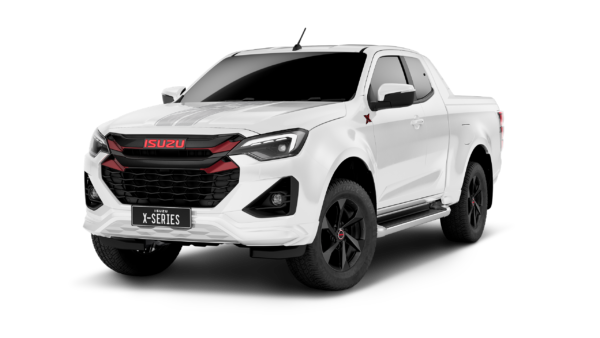
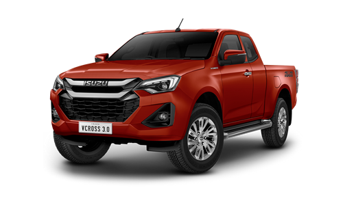
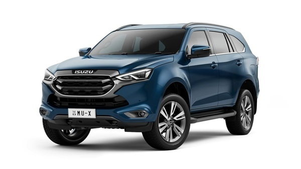
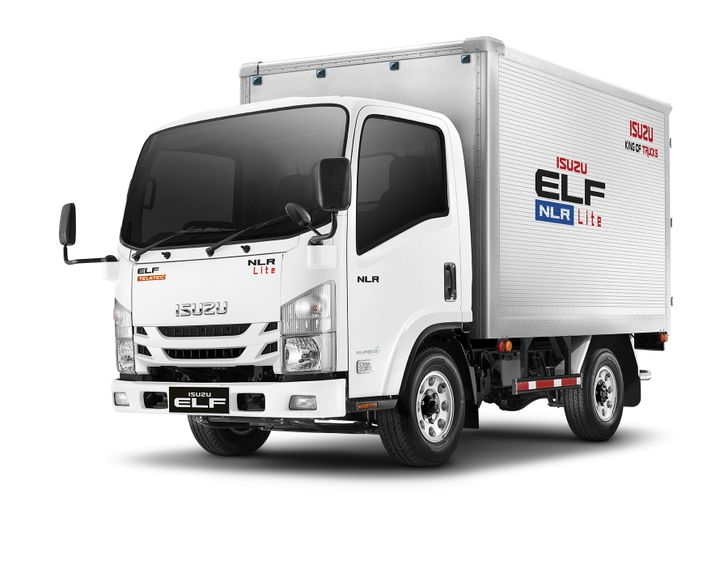

|  |
ISUZU
D-MAX X-Series เครื่องยนต์. ดีเซล. ระบบเกียร์. เกียร์อัตโนมัติ. เชื้อเพลิง. ดีเซล (B20). ความจุกระบอกสูบ. 1898 ซีซี. รถกระบะ สองตอน (Pickup Double Cab) ปิกอัพ 2 ประตูกว้าง. 1870. X. ยาว. 5270. X. สูง
| ราคา 1,032,000.00-1,039,000.00 บาท |
|
|  |
ISUZU
D-Max Hi-Lander 2023 (อีซูซุ ดีแมคซ์ ไฮ-แลนเดอร์ 2023) รถกระบะอเนกประสงค์แบบยกสูง สำหรับโดยสารและขนของหรืออุปกรณ์ และสามารถลุยน้ำท่วมหรือสภาพถนนที่ไม่ค่อยดีนักได้ แต่ไม่ถึงขั้นออฟโรด มี 2 ตัวถัง คือ 2 ประตู แค็บ 2 ที่นั่ง และ 4 ประตู 5 ที่นั่ง
|
|  |
Isuzu
MU-X (MY 2023) ดีเซล 4 สูบ DOHC 16 วาล์ว 1.9 ลิตร 1,898 ซีซี พ่วงระบบอัดอากาศ VGS และ Intercooler กำลังสูงสุด 150 แรงม้า ที่ 3,600 รอบ/นาที แรงบิดสูงสุด 350 นิวตันเมตร ที่ 1,800 – 2,600 รอบ/นาที จับคู่กับเกียร์ธรรมดา 6 จังหวะ / จับคู่กับเกียร์อัตโนมัติ 6 จังหวะ แบบ Sequential Shift พร้อม Manual Mode + – ขับเคลื่อน 2 ล้อ รองรับน้ำมันสูงสุดดีเซล B20
7 ที่นั่ง เบาะ 3
| ราคาเริ่มต้น 1,154,000 บาท |
|
|  |
NLR 130/LITE
รถบรรทุก 4 ล้อ
เครื่องยนต์ซูเปอร์คอมมอนเรล
- เครื่องยนต์:
- ขนาด 2,999 ซีซี ให้กำลังสูงสุด 130 แรงม้า ที่ 3,050 รอบ/นาที
- แรงบิดสูงสุด:
- 330 นิวตัน-เมตร ที่รอบต่ำเพียง 1,600-2,600 รอบ/นาที
| ราคาเริ่มต้น THB 1,051,000 |
|
|